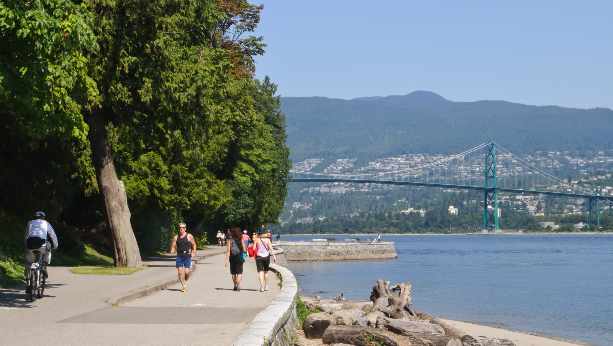

STANLEY PARK
DESCRIPTION
The world-famous Stanley Park is one of the major attractions for tourists when they visit Vancouver. Located next to the downtown core, Stanley Park is full of trails for walking and biking and has numerous scenic views from English Bay to the inner harbour. Despite being located in a major city, you can take one of the many networks of trails and still feel as though you're away from all the hustle and bustle of the city life. There are many routes through the park and the best opportunity for planning your trip is to look at a map to determine your route. However, for this description, we will start near the Rose Garden and bus loop, a central area of the park. From the gardens, walk across the Pipeline Road and along the South Creek Trail. The thick green forest is lined with Cedar, Hemlock, and Douglas Fir trees. At the junction go right and then a short distance later right again and head around Beaver Lake as it rounds the lake in a counterclockwise direction. Stop to look at the different species of ducks living in the lake. Occasionally, a long-legged heron can be seen walking through the shallow lake looking for fish. Continue around the lake and veer off onto the Lake Trail as it becomes paved. The sound of cars can be heard ahead as you reach an overpass that crosses over the Stanley Park Causeway that connects the downtown core with the North Shore via the Lions Gate Bridge. After crossing over the causeway, go right and along the Bridle Path as the sound of traffic weakens. Pass the first junction but go left on the second junction and onto the Rawlings Trail. The park is home to many squirrels and birds that are often visible as you walk through the forest. Continue along the Rawlings Trail to the Hollow Tree, a huge Red Cedar tree with a large enough opening to fit a car into. After taking photos of the popular tourist attraction, continue along the trail until meeting with the junction at Tatlow Walk. Go right onto Tatlow Walk and carefully cross the road towards Third Beach. Third Beach is a popular summer beach where city residents come to enjoy the sunshine and view of English Bay. After enjoying a break, head back towards the Tatlow Walk where you came from and back into the forest. Continue along the Tatlow Walk Trail for the next 1.2km towards Lost Lagoon, enjoying the fresh scents of Cedar and Fir trees. Cross the paved road and walk a few more steps down to the lagoon. Follow the trail to the left as it wraps around the east end of Lost Lagoon towards the city. The lagoon is a popular area for city residents to jog and walk and it is also home to several beautiful swans. Once on the other side of the lagoon, take the tunnel to cross underneath the busy Georgia Street. Just on the other side is a view of Coal Harbour. If you walked to the park or are planning on walking back into downtown, go right at this point for the short walk to Georgia and Denman Streets. If you are heading back to your car or the bus loop, continue to your left along the paved walkway back towards the park. At the roundabout, cross the street and head towards the gardens where you started your journey earlier in the day.